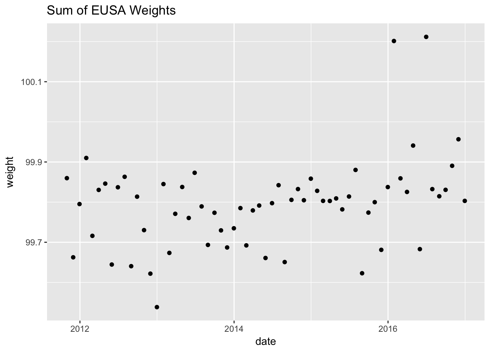
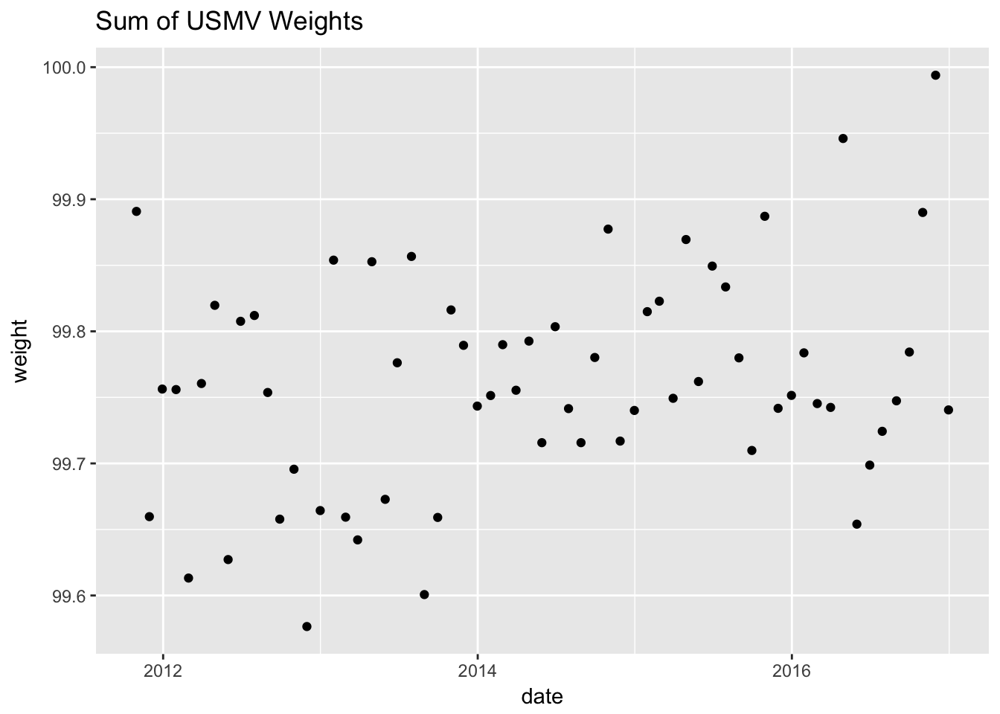
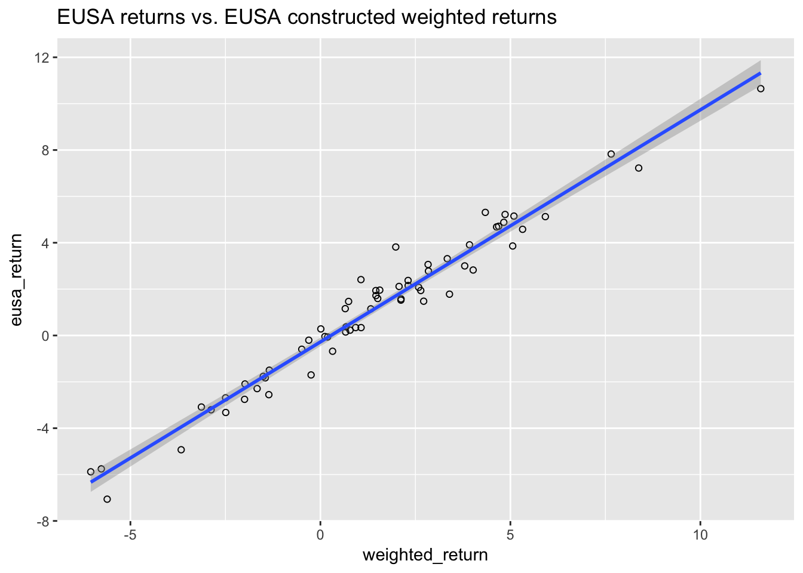
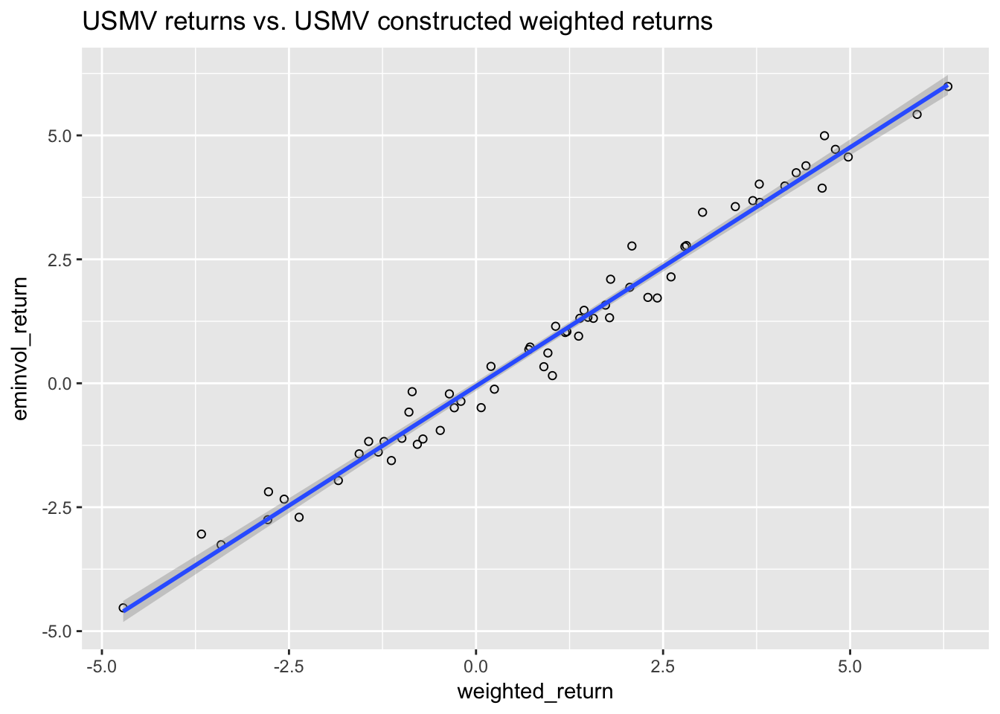
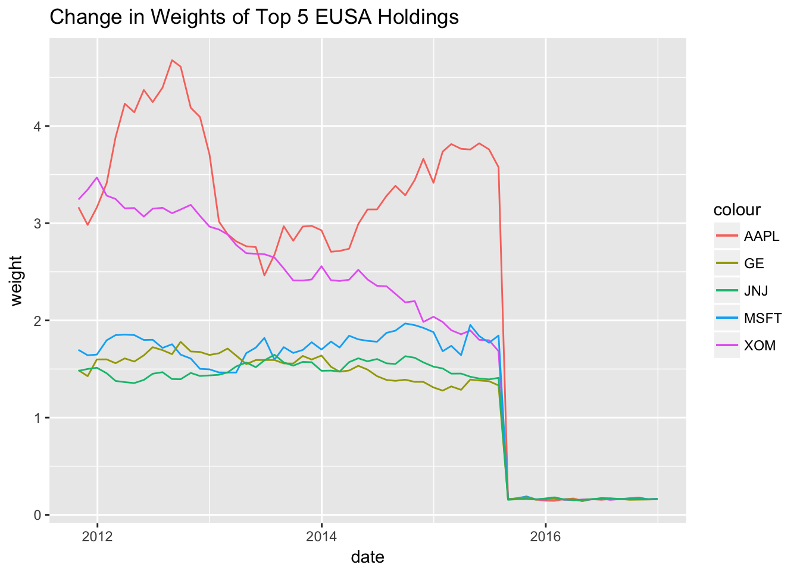
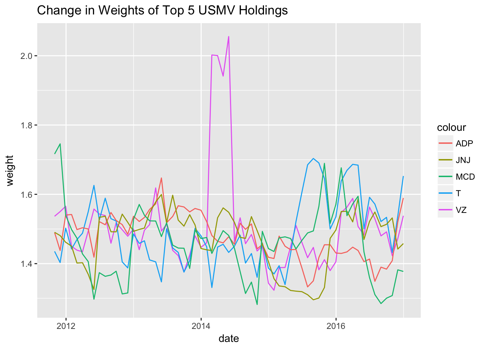

4 Data Collection and Summary Statistics
4.1 EUSA and USMV Data Compilation
Data was downloaded from www.ishares.com for EUSA (iShares MSCI USA Equal Weighted ETF) and USMV (iShares Edge MSCI Min Vol USA ETF), from Oct 31, 2011 to December 31, 2016. iShares are a type of ETF managed by BlackRock, and www.ishares.com contains the month end data for the two ETFs of interest in this dissertation. The data sets included information for the constituents of each ETF for a period in time, and some other characteristics of them, including: ticker, company name, asset class, weight of the stock relative to the entire index, price per share, number of shares, market value of the position, notional value of the position, sector, sedol number, isin number, exchange that the stock is listed on, and the month end date for the data. On the website, iShares had data for the positions and constituents of each ETF, for the last trading day of every month. Thus, an R function was created, one for each ETF, that would combine each month end data set into one aggregated one. Thus, each month end data set was individually downloaded, then aggregated to create the data sets “usa” and “minvol”. These were stored in the data-raw folder, for safekeeping.
4.2 EUSA and USMV Data Cleaning
I began the data cleaning process by removing cash and cash related assets, since this is not important for our purposes. After having a quick overview of the data, there were many issues with each respective data set that needed to be fixed before the analysis could begin. As USMV is a subset of EUSA, the issues were very similar, and those that existed in USMV, generally existed in USMV as well. The issues could be broke down into 3 main types.
4.2.1 Non-US Exchanges
First, looking at unique exchanges of the data on R, it was seen that there were many foreign exchanges like the Swiss Exchange and the Mexican Exchange, which did not make sense, given the ETF constituents are supposed to be listed on US-based exchanges. These could be broke up into two more groups: companies that were incorretly listed overseas and are actually listed on US exchanges, and companies that also are actually listed on US exchanges but instead had their overseas exchange tickers listed.
The first type of error was from companies that were listed on either the NYSE and NASDAQ, but were curiously listed on an foreign exchange instead, but had their US ticker used. One example was BAC, Bank of America, which is listed on the NYSE, but was listed on the Swiss Stock Exchange in the data set. The price for BAC in the data set corresponded to the price of BAC in the NYSE, although it was listed on the Swiss Exchange. Moreover, I checked to see if BAC corresponded to Bank of America on the Swiss Exchange, and it did not. Thus, after several checks, I was able to conclude that BAC in the dtaa set was incorrectly listed on the Swiss Exchange, and should have been listed on the NYSE instead. Since the ticker would still be able to be read into WRDS, these cases were left as is.
The next type of error was from companies listed on foreign exchanges that are listed on a US exchange as well, but their non-US ticker used. One example of this was Aflac, Inc. which was listed by its ticker “8686” on the Tokyo stock exchange. This was immediately a red flag due to the numbers in the ticker. This numeric ticker corresponded to Aflac, Inc. on the Tokyo exchange, but when checking the recorded price of the stock for corresponding dates, it matched up with the Aflac, Inc. stock on the NYSE, with ticker “AFL”. Thus, when this happened, each company was treated on a case by case basis. In this case, since the stock price corresponded to AFL, the ticker name was changed from “8686” to “AFL”. This would ensure the data could be properly read in from WRDS.
Overall, even with these numerous errors, it was a good sign because it implied that the data was generally correct (no internationally listed companies), but just recorded incorrectly. Thus, after making these changes, it was safe to assume the data was for the most part accurate.
4.2.2 Unrecognized Tickers
Another general type of error was when the ticker was not read into WRDS, causing all the prices for that ticker and company to be NA. This was evaluated, once again, on a case by case basis, by observing which tickers WRDS did not recognize, and looking at the company name to understand why. Sometimes, the issue was very obvious. One example of a clear discrepancy was when the ticker had an asterisk at the end of it. After careful digging, the asterisk did not seem to mean anything, and it is unclear why some tickers contained it. One example was “AAPL*”. This caused issues for reading the data in from WRDS, because that ticker was not read in as “AAPL” due to the asterisk.
Another example of the ticker not being read in properly was when it contained numbers. Alflac was an example that was mentioned previously, but another one that applied here was “AG4” which was the ticker for Allergan Since NYSE and NASDAQ tickers do not contain numbers, this was a clear red flag. After some research, it appeared AG4 is the ticker for Allergan on the Deutsche Boerse AG Stock Exchange. However, the prices corresponded to Allergan’s on the NYSE. Thus, this change in ticker was made. Overall, though each category is unique, there has been a lot of overlap, and often times correcting one type of error would fix other errors too. For example here, many tickers that include numbers will not be read in, and this is usually because the ticker corresponds with the same company but on a foreign exchange.
4.2.3 Price Discrepancies
The general methodology to make sure a change in ticker was appropriate was to check the price of the stock at a specific date, in the usa data set, and then comparing it to the new ticker I was going to assign it. If the price matched, the change was made. If the price did not match up and was very different, then I looked to see if a stock-split might be the cause of this. If there was no evidence of a stock-split, then the stock further analyzed to see what the issue was. In addition to looking and when prices did not match up with tickers and companies for certain dates, monthly returns were calculated for each stock during the times they were in the index, and any abnormal returns (magnitude greater than 30%) were look at manually. One example of this was Netflix’s stock 7:1 stock split in 2015. The monthly data showed a price of 656.94 on 2015-05-29 to a price of 114.31 on 2015-07-31, just one month later. This amounts to recorded loss of 82.5%. Since this surpassed the threshold set, it was look at in more detail. After some research, it was shown there was in fact a 7:1 stock split, so the price of the stock on 2015-07-31 was adjusted to 800.17, and the appropriate calculations were done. Thus in this case, the ticker was left alone, but just the price was adjusted.
Tickers that could not be determined were removed. In the end, the ticker named “1015736” and Orchard Supply Hardware Stores were removed from the data set. These together accounted for less than 0.2% of the data from one month-end date.
4.3 EUSA and USMV Data Overview
To get a sense of the EUSA data, summary statistics are shown below:
## ticker name asset.class
## CB : 101 3M CO : 63 Cash : 0
## AGN : 67 ABBOTT LABORATORIES : 63 Equity :38598
## NLSN : 64 ACCENTURE PLC : 63 Money Market: 0
## A : 63 ACTIVISION BLIZZARD INC: 63
## AAP : 63 ADOBE SYSTEM INC : 63
## AAPL : 63 ADVANCE AUTO PARTS INC : 63
## (Other):38177 (Other) :38220
## weight price shares market.value
## Min. :0.0000 Min. : 0.56 Min. : 0 Min. :2.000e+03
## 1st Qu.:0.0536 1st Qu.: 35.07 1st Qu.: 798 1st Qu.:5.289e+07
## Median :0.1208 Median : 55.09 Median : 1546 Median :8.282e+07
## Mean :0.1629 Mean : 71.91 Mean : 3365 Mean :1.610e+08
## 3rd Qu.:0.1636 3rd Qu.: 83.52 3rd Qu.: 3181 3rd Qu.:1.410e+08
## Max. :4.6773 Max. :953.00 Max. :133289 Max. :6.804e+09
## NA's :46
## notional.value sector sedol
## Min. : 40.5 Financials :6825 2000019: 63
## 1st Qu.: 54595.6 Consumer Discretionary:6595 2002305: 63
## Median : 74215.6 Information Technology:5487 2005973: 63
## Mean : 89651.9 Industrials :4687 2008154: 63
## 3rd Qu.: 116297.5 Health Care :4067 2011602: 63
## Max. :2106050.4 Energy :3208 2018175: 63
## NA's :22878 (Other) :7729 (Other):38220
## isin
## AN8068571086: 63
## BMG0450A1053: 63
## BMG0692U1099: 63
## BMG169621056: 63
## BMG3223R1088: 63
## BMG491BT1088: 63
## (Other) :38220
## exchange
## New York Stock Exchange Inc. :27499
## NASDAQ : 9238
## Boerse Berlin : 427
## Deutsche Boerse Ag : 394
## Bolsa Mexicana De Valores (Mexican Stock Exchange): 266
## (Other) : 658
## NA's : 116
## date
## Min. :2011-10-31
## 1st Qu.:2013-02-28
## Median :2014-06-30
## Mean :2014-06-12
## 3rd Qu.:2015-09-30
## Max. :2016-12-30
## To get a sense of the USMV data, summary statistics are shown below:
## ticker name asset.class
## CB : 81 ABBOTT LABORATORIES : 63 Cash : 0
## ABT : 63 ALTRIA GROUP INC : 63 Equity :9229
## ACGL : 63 ARCH CAPITAL GROUP LTD : 63 Money Market: 0
## ADP : 63 AT&T INC : 63
## AMT : 63 AUTOMATIC DATA PROCESSING INC: 63
## AZO : 63 AUTOZONE INC : 63
## (Other):8833 (Other) :8851
## weight price shares market.value
## Min. :0.0002 Min. : 0.56 Min. : 6 Min. : 1138
## 1st Qu.:0.2790 1st Qu.: 48.52 1st Qu.: 60888 1st Qu.: 5109636
## Median :0.6016 Median : 71.52 Median : 233116 Median : 18493183
## Mean :0.6810 Mean : 93.10 Mean : 462436 Mean : 30802130
## 3rd Qu.:1.0191 3rd Qu.:100.79 3rd Qu.: 567713 3rd Qu.: 39743039
## Max. :2.8287 Max. :953.00 Max. :15574666 Max. :240885300
## NA's :6
## notional.value sector sedol
## Min. : 22212 Health Care :1631 2002305: 63
## 1st Qu.: 19047994 Financials :1548 2005973: 63
## Median : 39501565 Information Technology:1482 2065308: 63
## Mean : 52545119 Consumer Staples :1222 2065955: 63
## 3rd Qu.: 70790821 Consumer Discretionary:1053 2073390: 63
## Max. :240885300 Utilities : 616 2077905: 63
## NA's :5026 (Other) :1677 (Other):8851
## isin exchange
## BMG0450A1053: 63 New York Stock Exchange Inc.:7010
## BMG3223R1088: 63 NASDAQ :1890
## BMG7496G1033: 63 Deutsche Boerse Ag : 58
## US00206R1023: 63 Spot Regulated Market - Bvb : 58
## US0028241000: 63 Boerse Berlin : 32
## US02209S1033: 63 (Other) : 164
## (Other) :8851 NA's : 17
## date
## Min. :2011-10-31
## 1st Qu.:2013-04-30
## Median :2014-09-30
## Mean :2014-08-13
## 3rd Qu.:2015-11-30
## Max. :2016-12-30
## 4.4 EUSA and USMV Data Check
4.4.1 Weights
Thus, after cleaning all the data, I wanted to check how accurate the data set actually was. First, the total monthly weights for EUSA and USMV were plotted over time. Since cash and a few tickers were removed, it was not expected for the ticker weights to add up to 1 each month, but something very close to 1 was expected. The monthly change in weights for EUSA is shown below.
## date weight
## Min. :2011-10-31 Min. : 99.54
## 1st Qu.:2013-02-14 1st Qu.: 99.73
## Median :2014-05-30 Median : 99.80
## Mean :2014-05-30 Mean : 99.79
## 3rd Qu.:2015-09-15 3rd Qu.: 99.84
## Max. :2016-12-30 Max. :100.21
As we can see in the scatterplor above for EUSA, the weights are very close to 100%, generally within 0.2%. The minimum weight is 99.54%, while the largest weight is 100.21%. The mean weight is 99.79%. The monthly change in weights for USMV is shown below.
## date weight
## Min. :2011-10-31 Min. :99.58
## 1st Qu.:2013-02-14 1st Qu.:99.72
## Median :2014-05-30 Median :99.76
## Mean :2014-05-30 Mean :99.76
## 3rd Qu.:2015-09-15 3rd Qu.:99.81
## Max. :2016-12-30 Max. :99.99
As we can see in the scatterplor above, the weights for USMV are very close to 100%, and no value exceeds 100%. The minimum weight is 99.58%, while the largest weight is 99.99%. The mean weight is 99.76%. Overall, these look pretty solid and imply the data is trustable.
4.4.2 Comparing actual ETF returns to constructed ETF returns for EUSA and USMV
Before taking the data as accurate, though, some checks were done first. This was accomplished by comparing the weighted returns of the constructed index we had for our data (looking at each constituent’s monthly return, multiplied by its weight), and comparing it to the actual ETF return. Thus, we wanted to check how our weighted returns compared to the ETF returns for both EUSA and USMV. Though we did not expect it to be perfectly correlated, we wanted to aim for at least a 98% or higher correlation between the weighted returns we calculated, and the ETF returns, on a monthly basis. The results for EUSA are shown below.

## [,1]
## Delt.1.arithmetic 0.9805503As we can see, the returns seem pretty consistent and have a correlation greater than 0.98.
Shown below is the data for USMV.

## [,1]
## Delt.1.arithmetic 0.9906848The correlation is 0.99, which is also very good.
4.4.3 Change in 5 largest holdings by average weight for EUSA and USMV
The next thing we want to see is how the top 5 largest holdings, by average weight, in each index have changed in weighting over time. For EUSA, the 5 largest holdings were AAPL, XOM, MSFT, GE, and JNJ. Their change in weights are shown below.

Shown above, for EUSA, we have some very interesting findings. The weights of the 5 companies are all very high, then suddenly all spike. Verifying this in the data, showed that for all 5 companies, holdings dropped significantly between 2015-07-31 and 2015-08-31. The reason for this is not entirely clear, but the general ETF started performing poorly around this time too. In July of 2015 the price per share was 45.20, then it dropped to 42.60 the following month, and dropped again to 40.50 in August 2015. Perhaps these large companies were doing poorly, and MSCI decided to try underweighting them.
For USMV, the 5 largest holdings were VZ, T, ADP, JNJ, and MCD. Their change in weights are shown below. As we can see below, with the exception of Verizon, the holdings generally remain between 1 and 1.6 percent of the overall portfolio.
